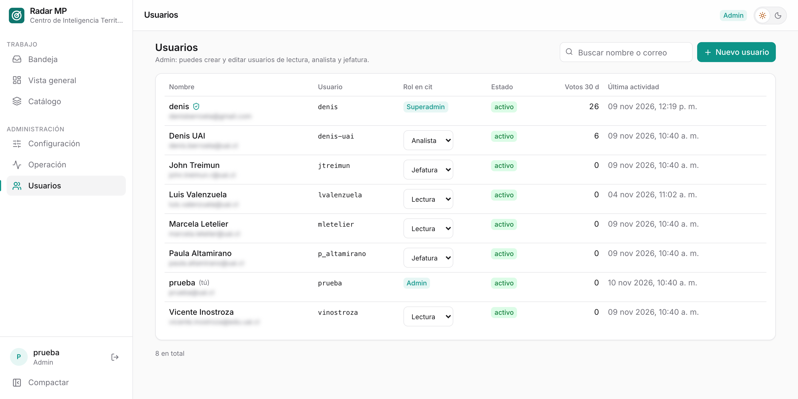
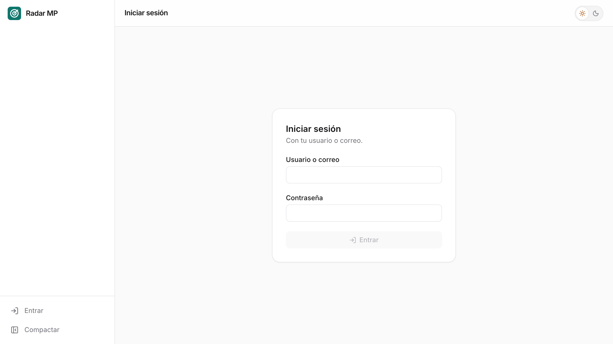

19 Usuarios
Usuarios define quién puede hacer qué. Cada persona tiene una cuenta con usuario (o correo) y contraseña, y un rol en cada unidad a la que pertenece. Disponible para admin y superadmin.
19.1 Los cinco roles
Los roles van de menos a más, y cada uno incluye todo lo que puede hacer el anterior:
| Rol | Bandeja | Catálogo | Etiquetar | Histórico | Configuración, Operación y Usuarios |
|---|---|---|---|---|---|
| Lectura | ✓ | ||||
| Analista | ✓ | ✓ | ✓ | ||
| Jefatura | ✓ | ✓ | ✓ | ✓ | |
| Admin | ✓ | ✓ | ✓ | ✓ | ✓ |
| Superadmin | ✓ | ✓ | ✓ | ✓ | ✓ + contraseñas y bajas |
- Lectura ve la bandeja y el detalle. Sirve para quien quiere enterarse sin intervenir.
- Analista además edita el Catálogo y etiqueta licitaciones. Las etiquetas enseñan al juez y calibran los umbrales.
- Jefatura es quien decide postular: además ve el Análisis histórico de competidores y montos.
- Admin además cambia la Configuración, usa Operación y administra las personas de su unidad.
- Superadmin puede todo en todas las unidades y es el único que cambia contraseñas, da de baja o elimina personas, nombra admin o superadmin e importa personas desde un CSV.
Los roles son por unidad; solo superadmin es global. Quien no tiene permiso no ve la opción: el menú, los botones de etiqueta y las secciones se ocultan, y si entra por un enlace directo ve «Tu rol no tiene acceso a esta sección». La API aplica las mismas reglas, así que no basta con esconder un botón.
19.2 Qué hay en la pantalla

Los correos de las personas aparecen desenfocados en las capturas de este libro.
Arriba, un recordatorio de lo que puede hacer quien mira (admin o superadmin), el buscador por nombre o correo y el botón Nuevo usuario. Debajo, la tabla de personas:
| Columna | Qué muestra |
|---|---|
| Nombre | Nombre y correo; un escudo marca a los superadmin y «(tú)» a uno mismo |
| Usuario | El nombre para iniciar sesión; avisa «sin contraseña» si todavía no puede entrar |
Rol en cit |
Un selector para cambiarlo, si quien mira puede asignar ese rol |
| Estado | Activo, pausado o baja |
| Votos 30 d | Cuántas etiquetas puso en los últimos 30 días |
| Última actividad | Su último inicio de sesión o etiqueta |
Al final de cada fila, solo para superadmin: 🔑 cambiar contraseña, dar de baja (o Reactivar) y 🗑 eliminar definitivamente.
19.3 Cómo se hace
19.3.1 Crear una persona
- Presionar Nuevo usuario.
- Completar nombre, correo (ahí recibirá los resúmenes), usuario (letras, números,
.,_,-), contraseña (mínimo 8 caracteres) y su rol en la unidad. - Crear usuario. La persona ya puede entrar.
Un admin solo puede asignar lectura, analista o jefatura, y solo en sus unidades.
19.3.2 Cambiar el rol
Elegir el nuevo rol en el selector de la fila; se guarda al instante. Nadie puede cambiar su propio rol, para no quedar sin administración por error.
19.3.3 Cambiar una contraseña (superadmin)
Presionar 🔑 y escribir la nueva (mínimo 8 caracteres). Todas las sesiones abiertas de esa persona se cierran. También desde la línea de comandos:
uv run radar users set-password ana19.3.4 Dar de baja o eliminar (superadmin)
- Dar de baja: la persona deja de poder entrar y sus sesiones se cierran, pero conserva su historial y sus etiquetas siguen atribuidas a ella. Se revierte con Reactivar.
- Eliminar definitivamente: borra la cuenta y su historial; sus etiquetas quedan sin autor. Pide confirmación y no se puede deshacer. Conviene preferir la baja.
19.3.5 Iniciar sesión

Al entrar a la web se pide usuario (o correo) y contraseña. La sesión dura siete días y se cierra sola si la persona cambia su contraseña o es dada de baja. El nombre y el rol aparecen al pie de la barra lateral, junto al botón para cerrar sesión; el rol también se ve en el encabezado.
19.3.6 Crear el primer superadmin
Mientras no exista ningún superadmin con contraseña, la plataforma queda abierta, para poder instalarla. En ese modo, al pie de la barra lateral hay un campo «Tu nombre» que se guarda con cada etiqueta. El primer superadmin se crea desde la línea de comandos:
uv run radar users add ana@uai.cl --username ana --password --superadminDesde ese momento toda la plataforma exige iniciar sesión.
19.3.7 Otras tareas desde la línea de comandos
| Comando | Para qué |
|---|---|
radar users list |
Listar personas con su rol |
radar users import personas.csv |
Cargar varias personas desde un CSV |
radar users seed |
Crear personas a partir de los destinatarios de las alertas |
radar users link-feedback |
Atribuir a una persona las etiquetas antiguas que tenían un nombre escrito a mano |
19.3.8 Decidir quién recibe correo
La casilla Correo diario de cada persona se marca en Operación → Correos a usuarios, donde también se ve su vista previa y su historial de envíos.
19.4 Qué queda registrado
La plataforma guarda un historial por persona: inicios de sesión, etiquetas y etiquetas borradas (cada una con lo que decían el triaje y el juez en ese momento), vistas de detalle, aperturas en Mercado Público, altas, cambios de rol o de unidad, de estado y de contraseña, y vínculos de etiquetas antiguas. Hoy la pantalla muestra solo el resumen (votos y última actividad); el historial completo se consulta por la API en /admin/users/{id}/timeline. pendiente
Lo que todavía no se registra son los cambios de criterios: quién modificó un servicio, una regla o un umbral, y cuándo. pendiente
19.5 Bitácora
| Fecha | Cambio | Commit |
|---|---|---|
| 29-oct-2026 | Sin cuentas: cada persona escribe su nombre en la barra superior y se guarda como texto con cada etiqueta. | ddbfd17 |
| 30-oct-2026 | Base de usuarios: tablas app_user, user_profile y user_event; las etiquetas pueden apuntar a una persona y cada voto queda en su historial. API /admin/users, protegida por ADMIN_TOKEN, y comandos radar users. |
8a22502 |
| 30-oct-2026 | Inicio de sesión con usuario y contraseña (sesiones de 7 días) y pantalla Usuarios para listar, crear, cambiar contraseñas y dar de baja. El primer superadmin con contraseña cierra la plataforma. | 6e70353 |
| 30-oct-2026 | Cinco roles por unidad, de lectura a superadmin. Toda la API exige su permiso, el menú se filtra por rol y nadie puede quitarse su propio acceso. | 263246a |
| 30-oct-2026 | Cada persona tiene una frecuencia de correo; quién recibe el correo diario se decide en Operación. | e91361d |
| 31-oct-2026 | Los analistas también etiquetan; analista y jefatura quedan con los mismos permisos. | 0c23c23 |
| 11-nov-2026 | Permiso nuevo historico: jefatura deja de ser igual a analista y además ve el Análisis histórico. |
en desarrollo, sin commit |
- Iniciar sesión con la cuenta UAI (Google Workspace) en vez de una contraseña propia (Otros centros). pendiente
- Ver el historial de cada persona en la pantalla. pendiente